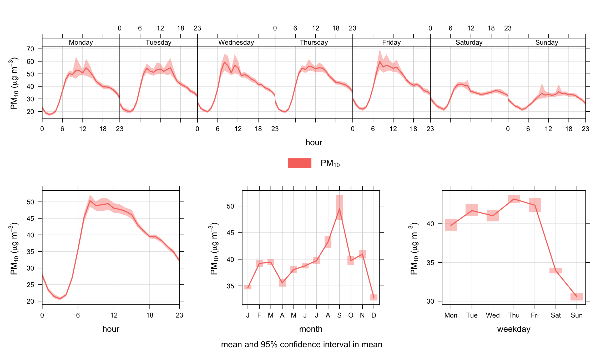
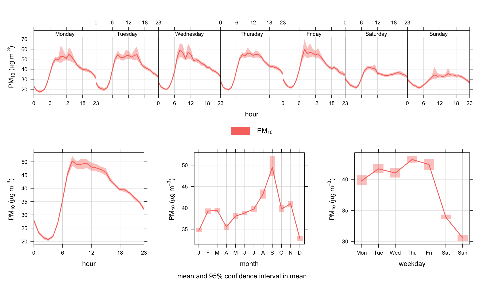
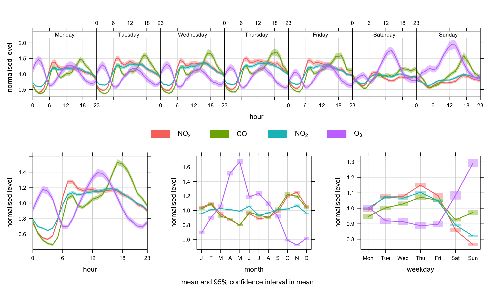
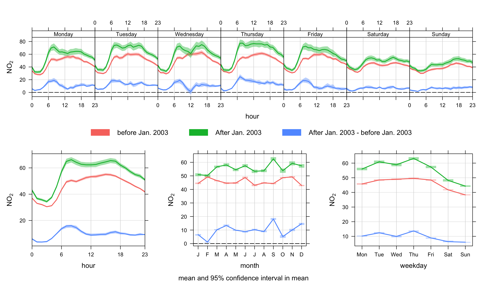
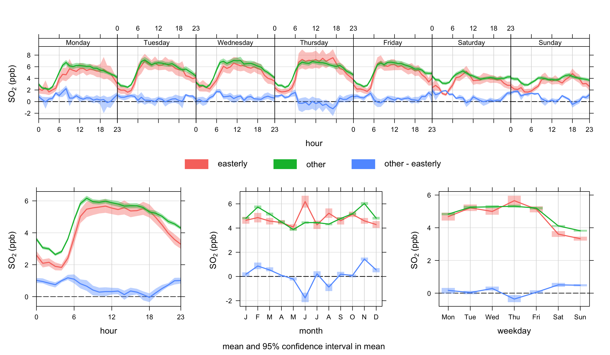
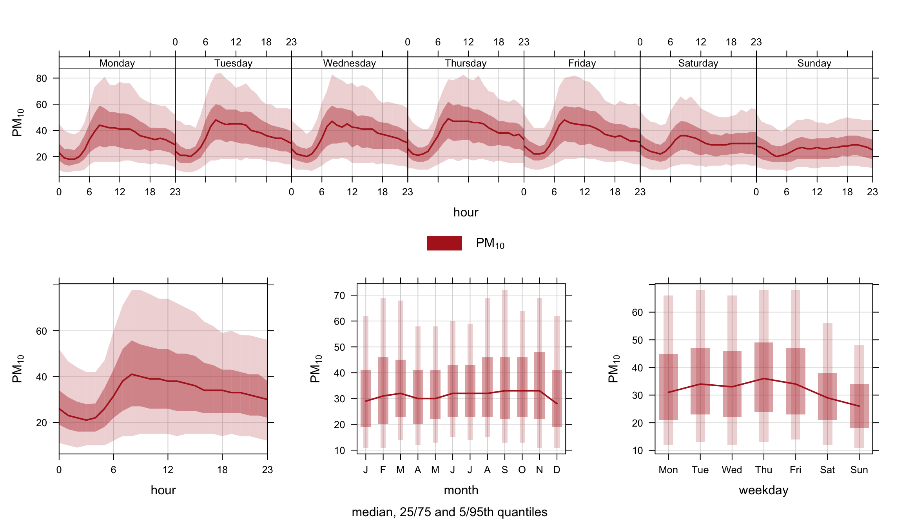

library(openair)
library(tidyverse)
timeVariation(filter(mydata, ws > 3, wd > 100, wd < 270),
pollutant = "pm10", ylab = "pm10 (ug/m3)")
timeVariation function to plot PM10 concentrations at Marylebone Road.In air pollution, the variation of a pollutant by time of day and day of week can reveal useful information concerning the likely sources. For example, road vehicle emissions tend to follow very regular patterns both on a daily and weekly basis. By contrast some industrial emissions or pollutants from natural sources (e.g. sea salt aerosol) may well have very different patterns.
The timeVariation function produces four plots: day of the week variation, mean hour of day variation and a combined hour of day – day of week plot and a monthly plot. Also shown on the plots is the 95% confidence interval in the mean. These uncertainty limits can be helpful when trying to determine whether one candidate source is different from another. The uncertainty intervals are calculated through bootstrap re-sampling, which will provide better estimates than the application of assumptions based on normality, particularly when there are few data available. The function can consider one or two input variables. In addition, there is the option of ‘normalising’ concentrations (or other quantities). Normalising is very useful for comparing the patterns of two different pollutants, which often cover very different ranges in concentration. Normalising is achieved by dividing the concentration of a pollutant by its mean value. Note also that any other variables besides pollutant concentrations can be considered e.g. meteorological or traffic data.
There is also an option difference which is very useful for considering the difference in two time series and how they vary over different temporal resolutions. Again, bootstrap re-sampling methods are used to estimate the uncertainty of the difference in two means.
Care has been taken to ensure that wind direction (wd) is vector-averaged. Less obvious though is the uncertainty in wind direction. A pragmatic approach has been adopted here that considers how wind direction changes. For example, consider the following wind directions: 10, 10, 10, 180, 180, 180\(^\circ\) The standard deviation of these numbers is 93\(^\circ\). However, what actually occurs is the wind direction is constant at 10\(^\circ\) then switches to 180\(^\circ\). In terms of changes there is a sequence of numbers: 0, 0, 170, 0, 0 with a standard deviation of 76\(^\circ\). We use the latter method as a basis of calculating the 95% confidence intervals in the mean.
There are also problems with simple averaging—for example, what is the average of 20 and 200\(^\circ\). It can’t be known. In some situations where the wind direction is bi-modal with differences around 180\(^\circ\), the mean can be ‘unstable’. For example, wind that is funnelled along a valley forcing it to be either easterly or westerly. Consider for example the mean of 0\(^\circ\) and 179\(^\circ\) (89.5\(^\circ\)), but a small change in wind direction to 181\(^\circ\) gives a mean of 270.5\(^\circ\). Some care should be exercised therefore when averaging wind direction. It is always a good idea to use thewindRosefunction with type set to ‘month’ or ‘hour’.
The timeVariation function is probably one of the most useful functions that can be used for the analysis of air pollution. Here are a few uses/advantages:
Variations in time are one of the most useful ways of characterising air pollution for a very wide range of pollutants including local urban pollutants and tropospheric background concentrations of ozone and the like.
The function works well in conjunction with other functions such as polarPlot (see Chapter 8), where the latter may identify conditions of interest (say a wind speed/direction range). By sub-setting for those conditions in timeVariation the temporal characteristics of a particular source could be characterised and perhaps contrasted with another subset of conditions.
The function can be used to compare a wide range of variables, if available. Suggestions include meteorological e.g. boundary layer height and traffic flows.
The function can be used for comparing pollutants over different sites.
The function can be used to compare one part of a time series with another. This is often a very powerful thing to do, particularly if concentrations are normalised. For example, there is often interest in knowing how diurnal/weekday/seasonal patterns vary with time. If a pollutant showed signs of an increase in recent years, then splitting the data set and comparing each part together can provide information on what is driving the change. Is there, for example, evidence that morning rush hour concentrations have become more important, or Sundays have become relatively more important? An example is given below using the splitByDate function.
timeVariation can be used to consider the differences between two time series, which will have multiple benefits. For example, for model evaluation it can be very revealing to consider the difference between observations and modelled values over different time scales. Considering such differences can help reveal the character and some reasons for why a model departs from reality.
We apply the timeVariation function to PM10 concentrations and take the opportunity to filter the data to maximise the signal from the road. The polarPlot function described in Section (Chapter 8) is very useful in this respect in highlighting the conditions under which different sources have their greatest impact. A subset of data is used filtering for wind speeds > 3 m s-1 and wind directions from 100–270 degrees. The code used is:
The results are shown in Figure 12.1. The plot shown at the top-left shows the diurnal variation of concentrations for all days. It shows for example that PM10 concentrations tend to peak around 9 am. The shading shows the 95% confidence intervals of the mean. The plot at the top-right shows how PM10 concentrations vary by day of the week. Here there is strong evidence that PM10 is much lower at the weekends and that there is a significant difference compared with weekdays. It also shows that concentrations tend to increase during the weekdays. Finally, the plot at the bottom shows both sets of information together to provide an overview of how concentrations vary.
Note that the plot need not just consider pollutant concentrations. Other useful variables (if available) are meteorological and traffic flow or speed data. Often, the combination of several sets of data can be very revealing.
The filter function is extremely useful in this respect. For example, if it were believed that a source had an effect under specific conditions; they can be isolated with the filter function. It is also useful if it is suspected that two or more sources are important that they can be isolated to some degree and compared. This is where the uncertainty intervals help — they provide an indication whether the behaviour of one source differs significantly from another.
library(openair)
library(tidyverse)
timeVariation(filter(mydata, ws > 3, wd > 100, wd < 270),
pollutant = "pm10", ylab = "pm10 (ug/m3)")
timeVariation function to plot PM10 concentrations at Marylebone Road.Figure 12.2 shows the function applied to concentrations of NOx, CO, NO2 and O3 concentrations. In this case the concentrations have been normalised. The plot clearly shows the markedly different temporal trends in concentration. For CO, there is a very pronounced increase in concentrations during the peak pm rush hour. The other important difference is on Sundays when CO concentrations are relatively much higher than NOx. This is because flows of cars (mostly petrol) do not change that much by day of the week, but flows of vans and HGVs (diesel vehicles) are much less on Sundays. Note, however, that the monthly trend is very similar in each case — which indicates very similar source origins. Taken together, the plots highlight that traffic emissions dominate this site for CO and NOx, but there are important difference in how these emissions vary by hour of day and day of week.
Also shown in the very different behaviour of O3. Because O3 reacts with NO, concentrations of NOx and O3 tend to be anti-correlated. Note also the clear peak in O3 in April/May, which is due to higher northern hemispheric background concentrations in the spring. Even at a busy roadside site in central London this influence is clear to see.
timeVariation(mydata,
pollutant = c("nox", "co", "no2", "o3"),
normalise = TRUE)
timeVariation function to plot NOx, CO, NO2 and O3 concentrations at Marylebone Road. In this plot, the concentrations are normalised.Another example is splitting the data set by time. We use the splitByDate function to divide up the data into dates before January 2003 and after January 2003. This time the option difference is used to highlight how NO2 concentrations have changed over these two periods. The results are shown in Figure 12.3. There is some indication in this plot that data after 2003 seem to show more of a double peak in the diurnal plots; particularly in the morning rush hour. Also, the difference line does more clearly highlight a more substantial change over weekdays and weekends. Given that cars are approximately constant at this site each day, the change may indicate a change in vehicle emissions from other vehicle types. Given that it is known that primary NO2 emissions are known to have increased sharply from the beginning of 2003 onwards, this perhaps provides clues as to the principal cause.
## split data into two periods (see Utlities section for more details)
mydata <- splitByDate(mydata, dates= "1/1/2003",
labels = c("before Jan. 2003", "After Jan. 2003"))
timeVariation(mydata, pollutant = "no2",
group = "split.by",
difference = TRUE)
timeVariation function to plot NO2 concentrations at Marylebone Road. In this plot, the concentrations are shown before and after January 2003.In the next example it is shown how to compare one subset of data of interest with another. Again, there can be many reasons for wanting to do this and perhaps the data set at Marylebone Road is not the most interesting to consider. Nevertheless, the code below shows how to approach such a problem. The scenario would be that one is interested in a specific set of conditions and it would be useful to compare that set, with another set. A good example would be from an analysis using the polarPlot function where a ‘feature’ of interest has been identified—maybe an indication of a different source. But does this potentially different source behave differently in terms of temporal variation? If it does, then maybe that provides evidence to support that it is a different source. In a wider context, this approach could be used in many different ways depending on available data. A good example is the analysis of model output where many diagnostic meteorological data are available. This is an area that will be developed.
The approach here is to first make a new variable called ‘feature’ and fill it with the value ‘other’. A subset of data is defined and the associated locations in the data frame identified. The subset of data is then used to update the `feature’ field with a new description. This approach could be extended to some quite complex situations.
There are a couple of things to note in Figure 12.2. There seems to be evidence that for easterly winds > 4 m s-1 that concentrations of SO2 are lower at night. Also, there is some evidence that concentrations for these conditions are also lower at weekends. This might reflect that SO2 concentrations for these conditions tend to be dominated by tall stack emissions that have different activities to road transport sources. This technique will be returned to with different data sets in future.
## make a field called "feature" and fill: make all values = "other"
mydata <- mutate(mydata,
feature = ifelse(ws > 4 & wd > 0 & wd <= 180, "easterly", "other"))
timeVariation(mydata, pollutant ="so2", group = "feature", ylab = "so2 (ppb)",
difference = TRUE)
timeVariation function to plot SO2 concentrations at Marylebone Road. In this plot, the concentrations are shown for a subset of easterly conditions and everything else. Note that the uncertainty in the mean values for easterly winds is greater than other. This is mostly because the sample size is much lower for easterly compared with other.By default timeVariation shows the mean variation in different temporal components and the 95% confidence interval in the mean. However, it is also possible to show how the data are distributed by using a different option for statistic. When statistic = "median" the median line is shown together with the 25/75th and 5/95th quantile values. Users can control the quantile values shown be setting the conf.int. For example, conf.int = c(0.25, 0.99) will show the median, 25/75th and 1/99th quantile values. The statistic = "median" option is therefore very useful for showing how the data are distributed — somewhat similar to a box and whisker plot. Note that it is expected that only one pollutant should be shown when statistic = "median" is used due to potential over-plotting; although the function will display several species of required. An example is shown in Figure 12.5 for PM10 concentrations.
timeVariation(mydata, pollutant = "pm10",
statistic = "median",
col = "firebrick")
timeVariation function to show the variation in the median, 25/75th and 5/95th quantile values for PM10. The shading shows the extent to the 25/75th and 5/95th quantiles.The timeVariation function produces several outputs that can be used for further analysis or plotting. It is necessary to read the output into a variable for further processing. The code below shows the different objects that are returned and the code shows how to access them.
myOutput <- timeVariation(mydata, pollutant = "so2")
## show the first part of the day/hour variation
## note that value = mean, and Upper/Lower the 95% confid. intervals
head(myOutput$data$day.hour)# A tibble: 6 × 8
# Groups: ci [1]
variable wkday hour default Mean Lower Upper ci
<fct> <ord> <int> <fct> <dbl> <dbl> <dbl> <dbl>
1 so2 Monday 0 01 January 1998 to 23 June 2… 2.93 2.69 3.16 0.95
2 so2 Tuesday 0 01 January 1998 to 23 June 2… 3.21 3.01 3.44 0.95
3 so2 Wednesday 0 01 January 1998 to 23 June 2… 3.35 3.07 3.66 0.95
4 so2 Thursday 0 01 January 1998 to 23 June 2… 3.22 2.87 3.56 0.95
5 so2 Friday 0 01 January 1998 to 23 June 2… 3.64 3.38 3.96 0.95
6 so2 Saturday 0 01 January 1998 to 23 June 2… 4.25 4.04 4.52 0.95## can make a new data frame of this data e.g.
day.hour <- myOutput$data$day.hour
head(day.hour)# A tibble: 6 × 8
# Groups: ci [1]
variable wkday hour default Mean Lower Upper ci
<fct> <ord> <int> <fct> <dbl> <dbl> <dbl> <dbl>
1 so2 Monday 0 01 January 1998 to 23 June 2… 2.93 2.69 3.16 0.95
2 so2 Tuesday 0 01 January 1998 to 23 June 2… 3.21 3.01 3.44 0.95
3 so2 Wednesday 0 01 January 1998 to 23 June 2… 3.35 3.07 3.66 0.95
4 so2 Thursday 0 01 January 1998 to 23 June 2… 3.22 2.87 3.56 0.95
5 so2 Friday 0 01 January 1998 to 23 June 2… 3.64 3.38 3.96 0.95
6 so2 Saturday 0 01 January 1998 to 23 June 2… 4.25 4.04 4.52 0.95All the numerical results are given by:
myOutput$data$day.hour ## are the weekday and hour results
myOutput$data$hour ## are the diurnal results
myOutput$data$day ## are the weekday results
myOutput$data$month ## are the monthly resultsIt is also possible to plot the individual plots that make up the (four) plots produced by timeVariation: